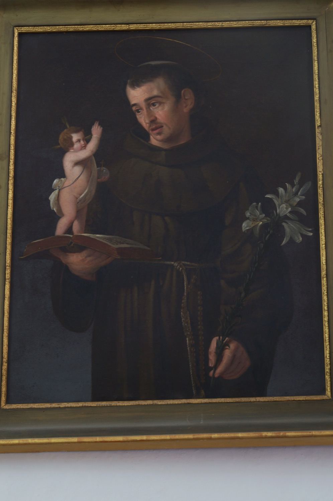

Sant Antoni de Pàdua (1195-1231), conegut popularment a Mallorca com sant Antoni dels Albercocs, nasqué a Lisboa, motiu pel qual també se’l coneix com sant Antoni de Lisboa. Frare franciscà, professor de teologia i gran predicador, és famós pels molts miracles que se li atribueixen. La seva popularitat i fama de miracler eren tan grans que va ser canonitzat menys d’un any després de la seva mort, fet que el converteix en el segon sant que més ràpidament ha estat canonitzat en la història de l’Església Catòlica.
En aquest quadre se’l representa amb l’hàbit franciscà, de color marró amb cordó, i el cap tonsurat. Subjecta amb una mà una branca de lliris blancs, símbol de puresa, i amb l’altra sosté un llibre amb un Nin Jesús al damunt. El llibre simbolitza la seva faceta de teòleg i predicador, mentre que el Nin Jesús fa referència a l’ocasió en què se’l va veure sostenint-lo en braços enmig d’un gran resplendor. Sovint, com en aquest cas, el Nin Jesús apareix damunt el llibre en al·lusió al fet que se li hauria aparegut mentre llegia o meditava les Sagrades Escriptures.